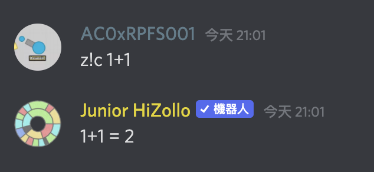

z!help 觀看指令時，有些指令你會看到「替代用法」：
這個替代用法就是指令的別名，通常會比原本的名稱短，讓你可以更快速、方便的使用 HiZollo 的指令，而不用輸入一長串的名字。
舉例來說，這個 calc 指令，除了使用 z!calc 以外，你也能使用 z!c 來做執行：

z!o 來呼叫他。而其下的 user 指令有個替代用法 u，
所以當你使用 osu 的 user 指令時，總共可以有以下幾種方式：z!osu user chocomintz!osu u chocomintz!o user chocomintz!o u chocomint| 分類 | 內容 |
|---|---|
| 基本 | 邀請 HiZollo ・ 指令清單及一般指令・ 指令用法的查詢 |
| 進階 | 子指令・ 指令別名・ 子指令快速用法 |
| 特殊 |
隱藏指令・
z!calc 的進階用法・
支援伺服器
|